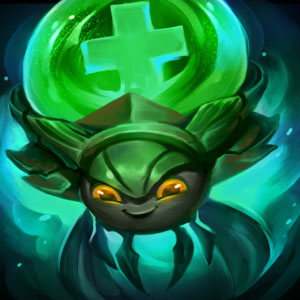

Invocador: Grendon 
Principais Campeões

Camille, a Sombra de Aço

Kayn, o Ceifador das Sombras

Syndra, a Soberana Sombria

Jinx, o Gatilho Desenfreado

Braum, o Coração de Freljord
Tipos de Campeões mais escolhidos

40%

0%

40%

0%

20%

0%
Melhores Rotas

Rota do Meio
Campeões da rota do meio são aqueles que possuem alto dano explosivo e podem fazer de tudo, sejam sozinhos ou em equipe. Para eles, o combate é uma dança perigosa, e nela devem sempre buscar oportunidades para superar seu oponente.